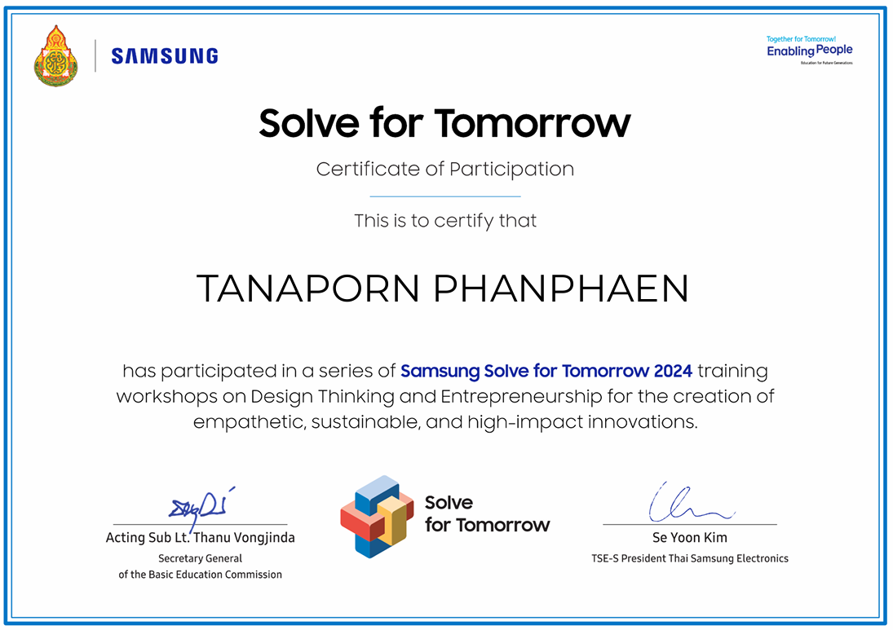

เกียรติบัตรและรางวัล
เกียรติบัตรและรางวัลเหล่านี้เป็นเครื่องยืนยันถึงความมุ่งมั่นและความพยายามของฉันที่ทุ่มเทให้กับกิจกรรมและการเรียนรู้ต่างๆ ตลอดช่วงเวลาที่ผ่านมาตั้งแต่ระดับประถมศึกษาจนถึงปัจจุบัน ซึ่งทำให้ฉันได้พัฒนาทักษะและความสามารถที่หลากหลาย
ระดับมัธยมศึกษาตอนปลาย
ได้รับรางวัลชนะเลิศระดับโรงเรียน
กิจกรรมการแข่งขันตอบปัญหาวิทยาศาสตร์ ระดับชั้นมัธยมศึกษาปีที่ 4 (โปรแกรมวิทย์-คณิต)
ได้รับรางวัลระดับเหรียญเงิน รองชนะเลิศอันดับที่ 1
กิจกรรมการแข่งขันหุ่นยนต์ระดับสูง ระดับชั้น ม.4-ม.6
งานศิลปหัตหรรมนักเรียน ครั้งที่ 71 ปีการศึกษา2566
ได้รับรางวัลระดับเหรียญทองแดง รองชนะเลิศอันดับที่ 1
กิจกรรมการแข่งขันสร้างสรรค์ผลงานคณิตศาสตร์โดยใช้โปรแกรม GSP ระดับชั้น ม.4-ม.6
งานศิลปหัตหรรมนักเรียน ครั้งที่ 71 ปีการศึกษา2566
ผ่านเข้ารอบชิงชนะเลิศ
กิจกรรมการแข่งขันการประกวดพฤกษนวัตกรรม Pitching Idea Challenge 2024
งานเกษตรกำแพงแสน ประจำปี 2567
ได้รับรางวัลเข้าร่วมการแข่งขัน
กิจกรรมการแข่งขันการพัฒนาหุ่นยนต์อัตโนมัติด้วยภาษาไพทอน
ประจำปี 2566 ภาควิชาวิศวกรรมคอมพิวเตอร์ คณะวิศวกรรมศาสตร์
ได้รับรางวัลเข้าร่วมการแข่งขัน
เข้าร่วมการอบรมและแข่งขัน Samsung Solve for Tomorrow 2024
เกี่ยวกับ Design Thinking และ Entrepreneurship เพื่อสร้างนวัตกรรมที่มีผลกระทบสูง พร้อมทั้งมีความเห็นอกเห็นใจและยั่งยืน
ได้รับรางวัลเข้าร่วมการแข่งขัน
กิจกรรมการแข่งขันเขียนโปรแกรมคอมพิวเตอร์ (ระดับมัธยมศึกษา)
งานสัปดาห์วิทยาศาตร์ ปี 2567
ณ คณะวิทยาศาสตร์ มหาวิทยาลัยศิลปากร
ได้รับรางวัลเข้าร่วมการแข่งขัน
เข้าร่วมการอบรมและแข่งขัน Samsung Solve for Tomorrow 2025
เกี่ยวกับ Design Thinking และ Entrepreneurship เพื่อสร้างนวัตกรรมที่มีผลกระทบสูง พร้อมทั้งมีความเห็นอกเห็นใจและยั่งยืน
ได้รับรางวัลเข้าร่วมการแข่งขัน
กิจกรรมการแข่งขันตอบปัญหาคณิตศาสตร์ ระดับมัธยมศึกษาตอนปลาย
ในงานสัปดาห์วิทยาศาสตร์แห่งชาติ ประจำปี 2568
ได้รับรางวัลเข้าร่วมการแข่งขัน
กิจกรรมการแข่งขันตอบปัญหาคณิตศาสตร์ ระดับมัธยมศึกษาตอนปลาย
มหาวิทยาลัยสงขลานครินทร์
ระดับมัธยมศึกษาตอนต้น
ได้รับการยกย่องว่าเป็น "นักเรียนที่มีผลการเรียนดี"
ระดับเกรดเแลี่ย 3.86 ประจำปีการศึกษา 2563
ได้รับรางวัลเหรียญเงิน ชนิดกีฬาเปตอง
การแข่งขันกีฬาชิงชนะเลิศแก่งจังหวัดราชบุรี ประจำปี 2563
ได้รับรางวัลเหรียญเงิน ชนิดกีฬาเปตอง รุ่นอายุ 14 ปี
การแข่งขันกีฬานักเรียนนักศึกษาจังหวัดราชบุรี ประจำปีงบประมาณ 2563

ได้รับรางวัลเข้าร่วมการแข่งขันระดับโรงเรียน
กิจกรรมการแข่งขันตอบปัญหาวิทยาศาสตร์ ระดับชั้นมัธยมศึกษาปีที่ 3
ได้รับรางวัลชมเชย ระดับชั้นมัธยมศึกษาตอนต้น
การประกวดสุนทรพจน์เนื่องในวันเยาวชนแห่งชาติ
ได้รับรางวัลเหรียญทองแดง ชนะเลิศอันดับที่ 3
การแข่งขันกีฬานักเรียนภายในเขตเทศบาลเมืองบ้านโป่ง ประจำปี 2565
เป็นนักเรียน "คนดีศรีรัตนฯ" ด้านกิจกรรม ประจำปีการศึกษา 2565
ระดับประถมศึกษา
มีผลคะแนนการทดสอบการอ่านออกเขียนได้ ประจำปี 2559
คะแนนสูงสุดเป็นอันดับที่ 1 ของระดับชั้นประถมศึกษาปีที่ 3
โรงเรียนอนุบาลเทศบาลตำบลกรับใหญ่
มีผลคะแนนการสอบวัดความสามารถพื้นฐานของผู้เรียนระดับชาติ (National Test : NT)
คะแนนสูงสุดเป็นอันดับที่ 1 ของระดับชั้นประถมศึกษาปีที่ 3
โรงเรียนอนุบาลเทศบาลตำบลกรับใหญ่

ได้รับรางวัลรองชนะเลิศอันดับที่ 2
กิจกรรมการประกวด เขียนตามคำบอก โครงการวันภาษาไทยแห่งชาติ ประจำปี 2560
ได้รับรางวัลรองชนะเลิศอันดับที่ 2
กิจกรรมการแข่งขันการอ่านทำนองเสนาะจากเรื่อง พระอภัยมณี
โครงการวันสุนทรภู่ ประจำปี 2561
ได้รับรางวัลชนะเลิศ การแข่งขันการแต่งบทประพันธ์ (กลอนสุภาพ)
โครงการวันสุนทรภู่ ประจำปี 2561
ได้รับรางวัลชนะเลิศ การแข่งขันตอบปัญหาภาษาไทย ระดับชั้นประถมศึกษาปีที่ 5
โครงการวันภาษาไทยแห่งชาติ ประจำปีการศึกษา 2561
ได้รับรางวัลระดับเหรียญทอง รองชนะเลิศใอันดับที่ 2
กิจกรรม จัดสวนถาดแห้ง ระดับชั้น ไม่กำหนดช่วงชั้น
ได้เข้าร่วมการประกวดการแข่งขันการจัดสวนถาดแห้ง
งานมหกรรมการจัดการศึกษาท้องถิ่น ประจำปี 2561
เป็นตัวแทนนักเรียนระดับจังหวัดเข้าสอบแข่งขันคนเก่งในดรงเรียนท้องถิ่น ระดับประเทศ
กลุ่มสาระการเรียนรู้คณิตศาสตร์ ชั้นประถมศึกษาปีที่ 5
เป็นผู้ที่สร้าชื่อเสียงให้กับโรงเรียนระดับประเทศในการแข่งขันกีฬาเปตอง
ได้รับรางวัลชนะเลิศอันดับที่ 3 การแข่งขันวาดภาพระดับโรงเรียน
โครงการกิจกรรมพัฒนาาผู้เรียนสู่ความเป็นเลิศด้านศิลปะ : ศิลป์สร้างสรรค์
ไได้รับรางวัลระดับเหรียญเงินกิจกรรมการประกวดการแข่งขันการจัดสวนถาดแห้ง
การแข่งขันทักษะทางวิชาการ ระดับภาคกลาง ประจำปีงบประมาณ 2562
ได้รับรางวัลชนะเลิศอันดับที่ 2 ในการแข่งขันวาดภาพระดับโรงเรียน
ได้รับรางวัลเหรียญทอง
dkic-j'-yo9v[xyPsk86ITii, ginjv' fu =yj; xd9b itfy[xit5,L7dKk9vox]kp